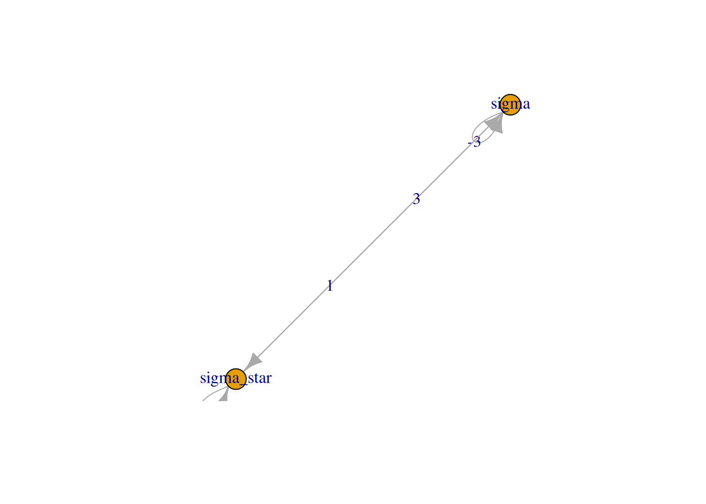
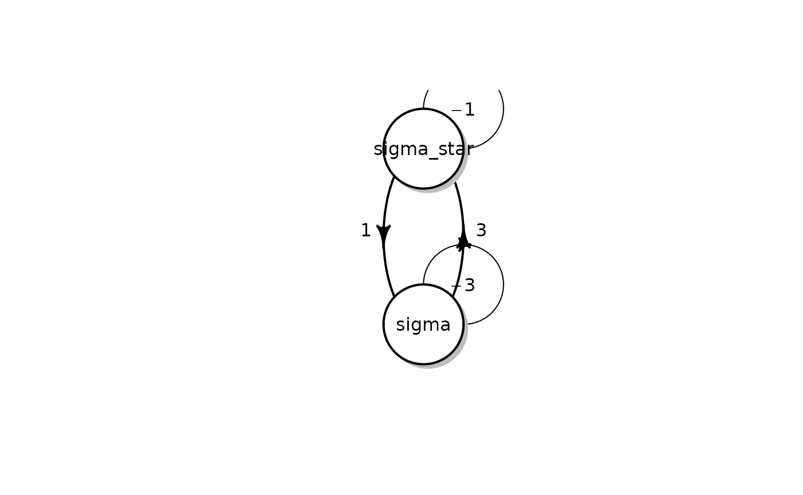

Expected Hitting Time using CTMC
The package provides ExpectedTime function to calculate average hitting time from one state to another. Let the final state be j, then for every state , where is the set of all possible states and holding time for every . Assuming the conditions to be true, expected hitting time is equal to minimal non-negative solution vector to the system of linear equations (Norris 1998):
For example, consider the continuous time markovchain which is as follows:
) ]
Now if we have to calculate expected hitting time the process will take to hit state if we start from , we apply the ExpectedTime function. ExpectedTime takes four inputs namely a ctmc class object, initial state , the final state that we have to calculate expected hitting time and a logical parameter whether to use RCpp implementation. By default, the function uses RCpp as it is faster and takes lesser time.
ExpectedTime(ctmc,1,4)
#> [1] 7We find that the expected hitting time for process to be hit state is 7 units in this case.
Calculating Probability at time T using ctmc
The package provides a function probabilityatT to calculate probability of every state according to given ctmc object. The Kolmogorov’s backward equation gives us a relation between transition matrix at any time t with the generator matrix (Dobrow 2016):
Here we use the solution of this differential equation for and . In this equation, is the transition function at time t. The value at time describes the conditional probability of the state at time to be equal to j if it was equal to i at time .
It takes care of the case when ctmc object has a generator represented by columns.
If initial state is not provided, the function returns the whole transition matrix .
Also to mention is that the function is also implemented using RCpp and can be used to lessen the time of computation. It is used by default.
Next, We consider both examples where initial state is given and case where initial state is not given.
In the first case, the function takes two inputs, first of them is an object of the S4 class ‘ctmc’ and second is the final time .
probabilityatT(ctmc,1)
#> a b c d
#> a 0.41546882 0.24714119 0.2703605 0.06702946
#> b 0.12357060 0.63939068 0.0348290 0.20220972
#> c 0.09012017 0.02321933 0.7411205 0.14553997
#> d 0.00000000 0.00000000 0.0000000 1.00000000Here we get an output in the form of a transition matrix.
If we take the second case i.e. considering some initial input:
probabilityatT(ctmc,1,1)
#> [1] 0.41546882 0.24714119 0.27036052 0.06702946In this case we get the probabilities corresponding to every state. this also includes probability that the process hits the same state after time .
Plotting generator matrix of continuous-time markovchains
The package provides a plot function for plotting a generator matrix in the form of a directed graph where every possible state is assigned a node. Edges connecting these nodes are weighted. Weight of the edge going from a state to state is equal to the value . This gives a picture of the generator matrix.
For example, we build a ctmc-class object to plot it.
Now if we plot this function we get the following graph:
plot(molecularCTMC)
#> Warning: Non-positive edge weight found, ignoring all weights during graph
#> layout.
The figure shown is built using the igraph package. The package also provides options of plotting graph using diagram and DiagrammeR packages. Plot using these packages can be built using these commands:
if(requireNamespace(package='ctmcd', quietly = TRUE)) {
plot(molecularCTMC,package = "diagram")
} else {
print("diagram package unavailable")
}
Similarly, one can easily replace diagram package with DiagrammeR.
Imprecise Continuous-Time Markov chains
Continuous-time Markov chains are mathematical models that are used to describe the state-evolution of dynamical systems under stochastic uncertainty. However, building models using continuous time markovchains take in consideration a number of assumptions which may not be realistic for the domain of application; in particular; the ability to provide exact numerical parameter assessments, and the applicability of time-homogeneity and the eponymous Markov property. Hence we take ICTMC into consideration.
More technically, an ICTMC is a set of “precise” continuous-time finite-state stochastic processes, and rather than computing expected values of functions, we seek to compute lower expectations, which are tight lower bounds on the expectations that correspond to such a set of “precise” models.
Types of ICTMCs
For any non-empty bounded set of rate matrices , and any non-empty set of probability mass functions on , we define the following three sets of stochastic processes that are jointly consistent with and :
- is the consistent set of all well-behaved stochastic processes;
- is the consistent set of all well-behaved Markov chains;
- is the consistent set of all well-behaved homogeneous Markov chains (Thomas Krak 2017).
From a practical point of view, after having specified a (precise) stochastic process, one is typically interested in the expected value of some function of interest, or the probability of some event. Similarly, in this work, our main objects of consideration will be the lower probabilities that correspond to the ICTMCs.
Lower Transition Rate Operators for ICTMCs
A map from to is called a lower transition rate operator if, for all , all , all , and all (Thomas Krak 2017):
- such that
Lower Transition Operators
A map from to is called a lower transition operator if, for all , all , all , and all (Thomas Krak 2017):
ImpreciseProbabilityatT function
Now I would like to come onto the practical purpose of using ICTMC classes. ICTMC classes in these package are defined to represent a generator that is defined in such a way that every row of the generator corresponding to every state in the process is governed by a separate variable. As defined earlier, an imprecise continuous time markovchain is a set of many precise CTMCs. Hence this representation of set of precise CTMCs can be used to calulate transition probability at some time in future. This can be seen as an analogy with probabilityatT function. It is used to calculate the transition function at some later time t using generatoe matrix.
For every generator matrix, we have a corresponding transition function. Similarly, for every Lower Transition rate operator of an ICTMC, there is a corresponding lower transition operator denoted by . Here is the initial time and is the final time.
Now we mention a proposition (Thomas Krak 2017) which states that:
Let be a lower transition rate operator, choose any time and both greater than 0 such that , and let be the lower transition operator corresponding to . Then for any and , if we choose any such that:
[ n max((s-t)*||Q||,(s-t){2}||Q||{2}||f||_v) ]
with := max - min , we are guaranteed that (Thomas Krak 2017)
[ ||L_{t}^{s} - {i=1}^{n}(I + Q{l}) || ]
with
Simple put this equation tells us that, using for all then we can also approximate the quantity to arbitrary precision, for any given .
To explain this approximate calculation, I would take a detailed example of a process containing two states healthy and sick, hence . If we represent in form of an ICTMC, we get:
[ Q = () ]
for some .
The parameter here is the rate at which a healthy person becomes sick. Technically, this means that if a person is healthy at time , the probability that he or she will be sick at time , for small , is very close to . More intuitively, if we take the time unit to be one week, it means that he or she will, on average, become sick after weeks. The parameter is the rate at which a sick person becomes healthy again, and has a similar interpretation.
Now to completely represent the ICTMC we take an example and write the generator as:
[ Q = () : a ,b ]
Now suppose we know the initial state of the patient to be sick, hence this is represented in the form of a function by:
[ I_{s} = () ]
We observe that the .
Now to use the proposition mentioned above, we use the definition to calculate the lower transition operator Next we calculate the norm of the lower transition rate operator and use it in the proposition. Also we take value of to be 0.001.
Using the proposition we can come up to an algorithm for calculating the probability at any time given state at initial time and a ICTMC generator (Thomas Krak 2017).
The algorithm is as follows:
Input: A lower transition rate operator , two time points such that , a function and a maximum numerical error .
Algorithm:
- for do
- end for
- return
Output:
The conditional probability vector after time with error . Hence, after applying the algorithm on above example we get the following result:
if final state is and if final state is . The probability calculated is with an error equal to i.e. .
Now we run the algorithm on the example through R code.
states <- c("n","y")
Q <- matrix(c(-1,1,1,-1),nrow = 2,byrow = TRUE,dimnames = list(states,states))
range <- matrix(c(1/52,3/52,1/2,2),nrow = 2,byrow = 2)
name <- "testictmc"
ictmc <- new("ictmc",states = states,Q = Q,range = range,name = name)
impreciseProbabilityatT(ictmc,2,0,1,10^-3,TRUE)
#> [1] 0.008259774 0.140983476The probabilities we get are with an error of
Continuous time markovchain generator using frequency Matrix
The package provides freq2Generator function. It takes in a matrix representing relative frequency values along with time taken to provide a continuous time markovchain generator matrix. Here, frequency matrix is a 2-D matrix of dimensions equal to relative number of possible states describing the number of transitions from a state to state in time , which is another parameter to be provided to the function. The function also allows to chose among three methods for calculation of the generator matrix (Alexander Kreinin 2001). It requires the ctmcd package.
Three methods are as follows:
- Quasi Optimization - “QO”
- Diagonal Adjustment - “DA”
- Weighted Adjustment - “WA”
See reference for details about the methods.
Here is an example matrix on which freq2Generator function is run:
if(requireNamespace(package='ctmcd', quietly = TRUE)) {
sample <- matrix(c(150,2,1,1,1,200,2,1,2,1,175,1,1,1,150),nrow = 4,byrow = TRUE)
sample_rel = rbind((sample/rowSums(sample))[1:dim(sample)[1]-1,],c(rep(0,dim(sample)[1]-1),1))
freq2Generator(sample_rel,1)
} else {
print('ctmcd unavailable')
}
#> Warning in matrix(c(150, 2, 1, 1, 1, 200, 2, 1, 2, 1, 175, 1, 1, 1, 150), :
#> data length [15] is not a sub-multiple or multiple of the number of rows [4]
#> [,1] [,2] [,3] [,4]
#> [1,] -0.024212164 0.01544797 0.008764198 0
#> [2,] 0.006594821 -0.01822834 0.011633520 0
#> [3,] 0.013302567 0.00749703 -0.020799597 0
#> [4,] 0.000000000 0.00000000 0.000000000 0Committor of a markovchain
Consider set of states A,B comprising of states from a markovchain with transition matrix P. The committor vector of a markovchain with respect to sets A and B gives the probability that the process will hit a state from set A before any state from set B.
Committor vector u can be calculated by solving the following system of linear equations (Mathematics Stack Exchange 2015):
Now we apply the method to an example:
Here we get probability that the process will hit state “e” before state “c” given different initial states.
First Passage probability for set of states
Currently computation of the first passage time for individual states has been implemented in the package. firstPassageMultiple function provides a method to get first passage probability for given provided set of states.
Consider this example markovchain object:
Now we apply firstPassageMultiple function to calculate first passage probabilities for set of states $"b", "c"$ when initial state is $"a"$.
firstPassageMultiple(testmarkov,"a",c("b","c"),4)
#> set
#> 1 0.8000
#> 2 0.6000
#> 3 0.2540
#> 4 0.1394This shows us the probability that the process will hit any of the state from the set after n number of steps for instance, as shown, the probability of the process to hit any of the states among $"b", "c"$ after steps is .
Joint PDF of number of visits to the various states of a markovchain
The package provides a function noofVisitsDist that returns the PDF of the number of visits to the various states of the discrete time markovchain during the first N steps, given initial state of the process.
We will take an example to see how to use the function on a markovchain-class object:
transMatr<-matrix(c(0.4,0.6,.3,.7),nrow=2,byrow=TRUE)
simpleMc<-new("markovchain", states=c("a","b"),
transitionMatrix=transMatr,
name="simpleMc")
noofVisitsDist(simpleMc,5,"a")
#> a b
#> 0.348148 0.651852The output clearly shows the probabilities related to various states of the process.
Expected Rewards for a markovchain
The package provides a function expectedRewards that returns a vector of expected rewards for different initial states. The user provides reward values, a vector of size equal to number of states having a value corresponding to every state. Given a transition matrix , we get the vector of expected rewards after transitions according to the equation as follows (Gallager 2013):
Applying this equation on a markovchain-class object
transMatr<-matrix(c(0.99,0.01,0.01,0.99),nrow=2,byrow=TRUE)
simpleMc<-new("markovchain", states=c("a","b"),
transitionMatrix=transMatr)
expectedRewards(simpleMc,1,c(0,1))
#> [1] 0.01 1.99Expected Rewards for a set of states in a markovchain process
The package provides a function expectedRewardsBeforeHittingA that returns the value of expected first passage rewards given rewards corresponding to every state, an initial state. This means the function returns expected reward for given initial state , number of transitions and for a set of states with a constraint such that the process does not hit any of the states that belong to state . is the set of all possible states.
The function uses an equation which is as follows:
here , 1 being on position and being the rewards vector for state.
Checking Irreducibly of a CTMC
The package provides is.CTMCirreducible that returns a Boolean value stating whether the ctmc object is irreducible.
We know that a continuous time markovchain is irreducible if and only if its embedded chain is irreducible (Sigman 2009).
We demonstrate an example running the function:
energyStates <- c("sigma", "sigma_star")
byRow <- TRUE
gen <- matrix(data = c(-3, 3,
1, -1), nrow = 2,
byrow = byRow, dimnames = list(energyStates, energyStates))
molecularCTMC <- new("ctmc", states = energyStates,
byrow = byRow, generator = gen,
name = "Molecular Transition Model")
is.CTMCirreducible(molecularCTMC)
#> [1] TRUESimulation of Higher Order Multivariate Markovchains
The package provides predictHommc function. This function provides a simulation system for higher order multivariate markovchains. The function assumes that the state probability distribution of the jth sequence at time r+1 depends on the state probability distribution of all the sequences at n previous moments of time i.e. to . Hence the proposed model takes the form mathematically as (Ching et al. 2008):
with initials . Here,
Now we run an example on sample hommc object for simulating next 3 steps using predictHommc function. The function provides a choice of entering initial states according to the hommc object. In case the user does not enter initial states, the function takes all initial states to be the first state from the set of states.
if (requireNamespace("Rsolnp", quietly = TRUE)) {
statesName <- c("a", "b")
P <- array(0, dim = c(2, 2, 4), dimnames = list(statesName, statesName))
P[,,1] <- matrix(c(0, 1, 1/3, 2/3), byrow = FALSE, nrow = 2)
P[,,2] <- matrix(c(1/4, 3/4, 0, 1), byrow = FALSE, nrow = 2)
P[,,3] <- matrix(c(1, 0, 1/3, 2/3), byrow = FALSE, nrow = 2)
P[,,4] <- matrix(c(3/4, 1/4, 0, 1), byrow = FALSE, nrow = 2)
Lambda <- c(0.8, 0.2, 0.3, 0.7)
ob <- new("hommc", order = 1, states = statesName, P = P,
Lambda = Lambda, byrow = FALSE, name = "FOMMC")
predictHommc(ob,3)
} else {
print("Rsolnp unavailable")
}
#> [,1] [,2] [,3]
#> [1,] "b" "b" "b"
#> [2,] "a" "a" "a"Check Time Reversibility of Continuous-time markovchains
A Continuous-time markovchain with generator and stationary distribution is said to be time reversible if (Dobrow 2016):
Intuitively, a continuous-time Markov chain is time reversible if the process in forward time is indistinguishable from the process in reversed time. A consequence is that for all states i and j, the long-term forward transition rate from i to j is equal to the long-term backward rate from j to i.
The package provides is.TimeReversible function to check if a ctmc object is time-reversible.
We follow with an example run on a ctmc object.
energyStates <- c("sigma", "sigma_star")
byRow <- TRUE
gen <- matrix(data = c(-3, 3,
1, -1), nrow = 2,
byrow = byRow, dimnames = list(energyStates, energyStates))
molecularCTMC <- new("ctmc", states = energyStates,
byrow = byRow, generator = gen,
name = "Molecular Transition Model")
is.TimeReversible(molecularCTMC)
#> [1] TRUE